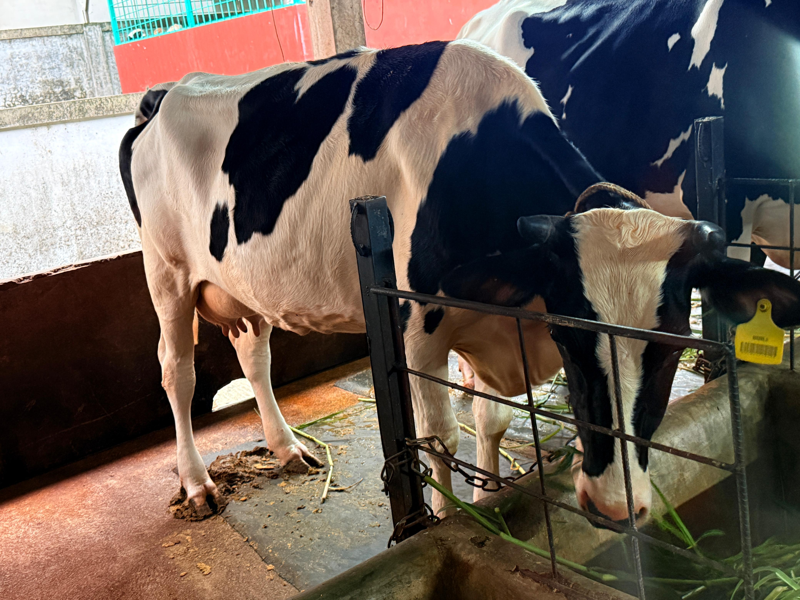
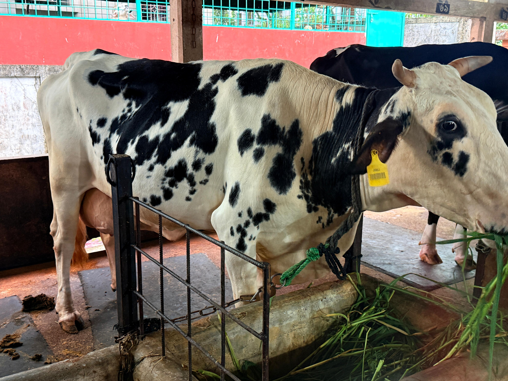
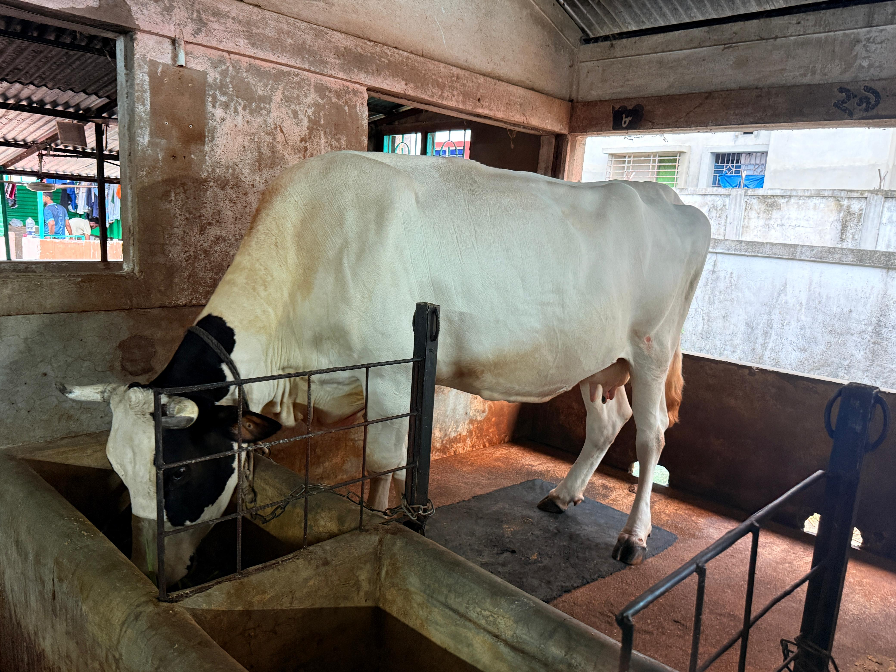
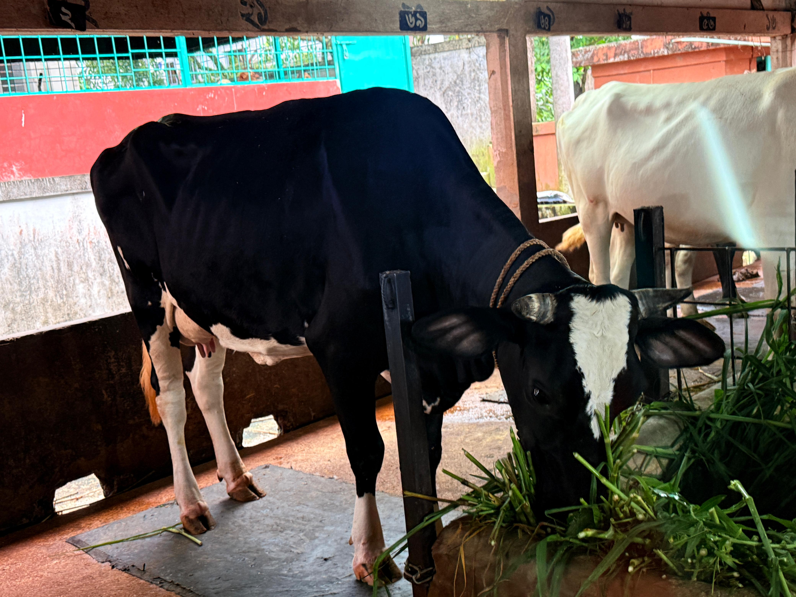
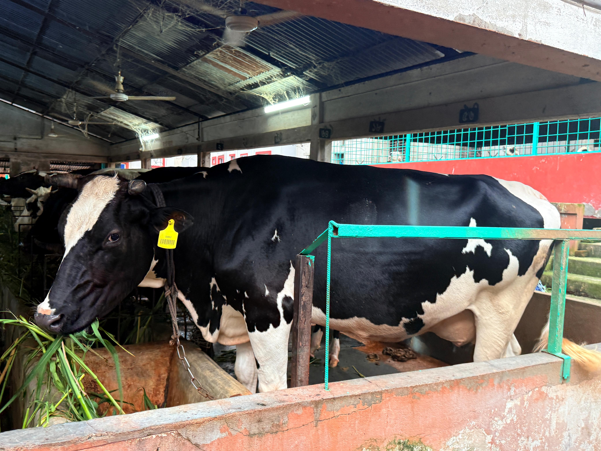
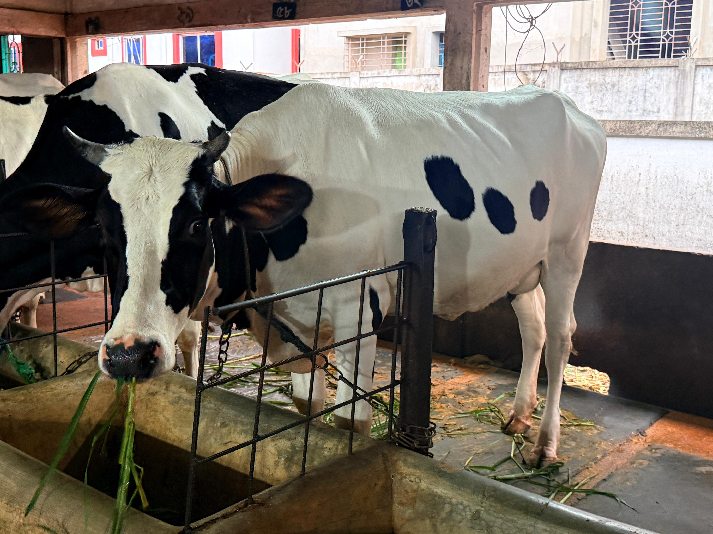

Welcome to Abdul Rason Agro Farm
Abdul Rason Agro Farm is a leading agro-based enterprise involved in Cattle Rearing & Milk Production.
Our Products & Machinery
Milking Dairy Products
Organic fresh milk, pasteurized dairy items, and butterfat derivatives processed under strict hygienic standards.






Animal Feed Processing Machines
Automated pelletizers, hammermills, and heavy-duty mixers designed for maximum yield efficiency.
Milking Machinery
Advanced electronic milker units, vacuum pump systems, and milk analyzers for commercial dairy farms.
OUR SOLEMN PROMISE:
- QUALITY
- COMMITMENT
- SERVICE
Services & Agricultural Solutions
Providing reliable milk supply, cattle sourcing, and practical farm management support across the Sylhet division.
Wholesale Milk Supply Contracts
Daily bulk supply of fresh, unadulterated milk for sweet shops, restaurants, institutions, and dairy processors in Moulvibazar and Sylhet.
- Guaranteed daily morning delivery
- Strict fat and purity standards
- Customized pricing contracts
Cattle & Qurbani Sourcing
Pre-booking and sale of healthy, disease-free bulls and cows for Qurbani, breeding, and commercial farm expansion.
- Grass-fed and organically fattened
- On-farm inspection & live weighing
- Pre-Eid holding and delivery options
Dairy Farm Setup Consultancy
Practical, hands-on guidance for new agro-entrepreneurs looking to establish commercial dairy or fattening farms in Bangladesh.
- Shed design & ventilation planning
- Fodder cultivation & feed formulation
- Vaccination & biosecurity protocols
Eid Collection 2026 & 2027
Company Profile & Business Model
Core Business Model
Milk Production & Distribution
Daily production and supply of fresh, unadulterated cow milk. We supply directly to local sweet shops, dairy processors, and retail customers across Kulaura and surrounding areas.
Cattle Rearing & Fattening
Selective breeding and scientific fattening of healthy bulls and cows for dairy expansion, breeding stock, and seasonal Qurbani markets.
Operational Standards & Facilities
- Hygienic Milking: Strict cleanliness protocols during extraction and storage to maintain zero-contamination milk quality.
- Veterinary Care: Routine health monitoring, regular vaccination cycles, and biosecurity measures to ensure livestock health.
About Our Farm
Abdul Rason Agro Farm operates under the leadership of Md abdul rason, Owner.
Abdul Rason Agro Farm has practically mirrored the development of modern cattle rearing & milk production in Bangladesh, standing as one of the region's most dynamic agro-enterprises. We are committed to large-scale cattle rearing, hygienic milk production.
Operating out of Kulaura, Moulvibazar, our farm contributes directly to the regional agricultural economy by generating local employment for a growing workforce and supplying fresh, organic milk across the Sylhet division and beyond.
Contact Us
Corporate Office
Abdul Rason Agro Farm
Telephone:
Email: